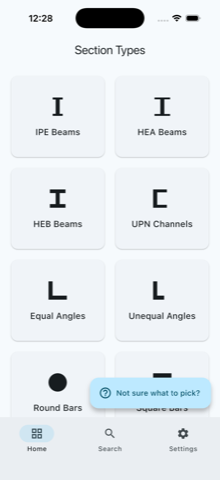
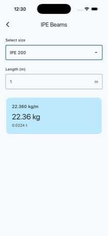
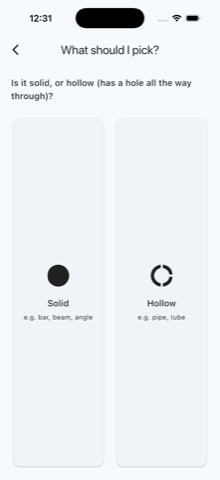

01
Melting
Scrap and DRI melt at 1,600°C and are cast into billets.

Riyadh · Al Rajhi Steel · since 2008
From the yard
Fifteen years between customers, mills and sites showed me where each order loses hours. The tools here came out of those hours.

Riyadh is building


Tools

Diameter to kilos per metre, per bar and per tonne.

182 sizes of IPE, HEA, HEB, UPN and angles, plus pipe and tube.

Bar bending schedule, cutting plan and shop sheet. Windows and Mac.
Merge, split, compress and OCR, entirely offline.
In the field


Every bar has a weight.
Every weight has an invoice.
The life of a bar
Scrap and DRI melt at 1,600°C and are cast into billets.

Billets are rolled down to diameter, ribbed and marked.

To the bar schedule and BS 8666 shape codes, with the least waste.

Cages, columns and mesh, checked by the engineer before the pour.
Desktop app
Finds the lowest-waste cut for every diameter and prints the shop sheet and labels. Free for Windows and Mac.
See RebarPlanI'm a commercial and sales professional with extensive experience in the steel industry, business development, customer relationships, and team leadership. Alongside that career, I've developed a strong interest in software development, artificial intelligence, and building digital products.
My move from commercial management into technology comes from a broader interest in solving real-world problems through a combination of business understanding, software, and AI.
I began my career in sales within the steel industry and built extensive experience working directly with customers, teams, business operations, pricing, market development, and commercial strategy.
Over the years, that experience created a strong understanding of how businesses actually operate, and where processes quietly become inefficient: information that is re-entered by hand, decisions that wait on a spreadsheet, work that depends on one person remembering a detail.
That gradually led to a deeper interest in technology, programming, software development, and artificial intelligence. Not as a career reset, but as the next tool for the same problems.
Business + Technology
The goal: understand technology deeply enough to build useful products and solutions that solve real problems.
Al Rajhi Steel Co. · Riyadh
Al Musairiey Metallic Industries
Arabian Steel Pipes
Skills
Listed as areas of active work and learning, not as claimed professional expertise.
From business to technology
Years of working with customers, teams, and day-to-day business processes make the gaps obvious: the manual step that keeps producing errors, the system that does not talk to the next one, the report that takes a day to assemble and an hour to read.
Remove the repeated manual steps between a request arriving and the work being done.
Get processes and tools to pass information to each other instead of relying on re-entry.
Where a mistake is expensive, put the check in the software rather than in someone's memory.
The interest is not technology for its own sake. It is what software and AI can do for productivity, for accuracy, and for the experience of the people using the system.
Automation & workflow governance
A large share of business work is a chain of steps that already follows rules: a request arrives, information is checked, an approval is needed, a record has to exist afterwards. I'm particularly interested in this layer, and in designing automated workflows on n8n: connecting the systems a business already uses, and moving repetitive steps out of people's inboxes.
The part that gets my attention is governance. An automation that runs without ownership, approval points, error handling, or a record of what it did is a risk rather than an improvement. The design question is not only what the workflow does, but who owns it, what it is allowed to decide on its own, and what it leaves behind as evidence.
Every workflow has a person accountable for it, not just a switch that is on.
Decisions with commercial or contractual weight stay with a human.
A workflow that breaks should say so loudly, not fail silently.
What ran, on what input, and what it produced, recorded and reviewable.
I didn't want to learn programming only as a theory. I wanted to build something real.
An offline calculator for structural steel section weights (I/H-beams, channels, angles, bars, pipe, tube, sheet), with no ads, no login, nothing ever leaves the device. Core formulas cross-checked against published EN 10365 / EN 10056 reference tables. Available now on the App Store.



A command-line tool for reinforcing-steel sales quotations: pricing by grade and size, VAT, sequential numbering, and local storage. Standard library only, no external dependencies.
A water-sort puzzle game: pour the colours until every tube holds one. The engine and level solver are built and tested so every level can be solved. Available now on the App Store.
An Arabic crossword generator built right to left from the start, so the grid, clues and typing all read the way Arabic does. Available now on the App Store.
Artificial intelligence
The attention here is on applied AI: how it changes the way a business operates, how decisions get made, how work gets automated, and how people interact with the software in front of them.
Where judgment-heavy, repetitive work can be supported or handled by a system.
Getting the relevant information in front of the person deciding, in a form they can act on.
Faster, more consistent responses, without losing the relationship behind them.
Treated as a working tool for real business problems, not as a trend to follow.
GitHub is a central part of this journey. It is where projects are built, ideas are tested, modern development practices are learned, and the technical work is documented over time.
The profile is a work in progress rather than a portfolio of finished products, which is the point: it shows the actual path, including the parts still under construction.
See the Projects section above for what's currently there.
LinkedIn is where the day-to-day of the steel business gets written down: what the market is doing, how pricing decisions actually get made, and where a process is costing more than it should.
The technical work sits on GitHub; the commercial thinking sits there. Both come from the same problems.
Notes are published here first, then shared on LinkedIn automatically through the feed.
Whether you're interested in business, technology, AI, software, or simply exchanging ideas, I'd be glad to connect.
Rebar supply · Al Rajhi Steel
I am a Section Head at Al Rajhi Steel. Send me the sizes and quantities, or the bar bending schedule, and I will come back with a quotation.